In this chapter we discuss Networking--how to configure a connection, using TCP/IP, SLIP, PPP or UUCP, and electronic mail and news.
Linux supports a full implementation of the TCP/IP (Transport Control Protocol/Internet Protocol) networking protocols. TCP/IP has become the most successful mechanism for networking computers worldwide. With Linux and an Ethernet card, you can network your machine to a local area network, or (with the proper network connections) to the Internet--the worldwide TCP/IP network.
Hooking up a small LAN of UNIX machines is easy. It simply requires an Ethernet controller in each machine and the appropriate Ethernet cables and other hardware. Or, if your business or university provides access to the Internet, you can easily add your Linux machine to this network.
The current implementation of TCP/IP and related protocols for Linux is called ``NET-3,'' and before that, ``NET-2.'' This has no relationship to the so-called NET-2 release of BSD UNIX; instead, ``NET-3'' in this context means the second implementation of TCP/IP for Linux.
Linux NET-3 also supports SLIP--Serial Line Internet Protocol and PPP--Point-to-Point Protocol. SLIP and PPP allow you to have dialup Internet access using a modem. If your business or university provides SLIP or PPP access, you can dial in to the SLIP or PPP server and put your machine on the Internet over the phone line. Alternately, if your Linux machine also has Ethernet access to the Internet, you can set up your Linux box as a SLIP or PPP server.
For complete information on setting up TCP/IP under Linux, we encourage you to read the Linux NET-3 HOWTO, available via anonymous FTP from sunsite.unc.edu. The NET-3 HOWTO is a complete guide to configuring TCP/IP, including Ethernet and SLIP or PPP connections, under Linux. The Linux Ethernet HOWTO is a related document that describes configuration of various Ethernet card drivers for Linux. The Linux Network Administrator's Guide, from the Linux Documentation Project, is also available. See Appendix A for more information on these documents.
Also of interest is the book TCP/IP Network Administration, by Craig Hunt. It contains complete information on using and configuring TCP/IP on UNIX systems.
You can use Linux TCP/IP without any networking hardware at all--configuring ``loopback'' mode allows you to talk to yourself. This is necessary for some applications and games which use the ``loopback'' network device.
However, if you want to use Linux with an Ethernet TCP/IP network, you need an Ethernet card. Common cards such as the 3com 3c503, HP PCLAN (27245 and 27xxx series), Western Digital WD80x3, and Novell NE2000/NE1000 are supported, as well as many more. See the Linux Ethernet and Hardware HOWTOs for details.
There are a few common situations that you should watch out concerning supported cards: 1) Several cards are support but offer shoddy performance or have other restrictions. Examples are the 3Com 3C501 which works but gives absolutely horrible performance and the Racal-Interlan NI6510 using the am7990 lance chip which doesn't work with more than 16 megabytes of RAM. In the same vein, many cards are NE1000/NE2000 compatible clones and can have various problems. See the Linux Ethernet HOWTO for a more complete discussion of Linux Ethernet hardware compatibility.
Linux also supports SLIP and PPP, which allows you to use a modem to access the Internet over the phone line. In this case, you'll need a modem compatible with your SLIP or PPP server--most servers require a 14.4bps V.32bis modem at a minimum . Performance is greatly improved with a 33.6bps or higher modem.
In this section we're going to discuss how to configure an Ethernet
TCP/IP connection on your system. Note that this method should work for
many systems, but certainly not all. This discussion should be enough
to get you on the right path to configuring the network parameters of
your machine, but there are numerous caveats and fine details not mentioned
here. We direct you to the Linux Network Administrators' Guide
and the NET-3-HOWTO for more information.
First, we assume that you have a Linux system that has the TCP/IP software installed. This includes basic clients such as telnet and ftp, system administration commands such as ifconfig and route (usually found in /etc), and networking configuration files (such as /etc/hosts). The other Linux-related networking documents described above explain how to go about installing the Linux networking software if you do not have it already.
We also assume that your kernel has been configured and compiled with TCP/IP support enabled. See Section 4.9 for information on compiling your kernel. To enable networking, you must answer ``yes'' to the appropriate questions during the make config step, and rebuild the kernel.
Once this has been done, you must modify a number of configuration files used by NET-3. For the most part this is a simple procedure. Unfortunately, however, there is wide disagreement between Linux distributions as to where the various TCP/IP configuration files and support programs should go. Much of the time, they can be found in /etc, but in other cases may be found in /usr/etc, /usr/etc/inet, or other bizarre locations. In the worst case you'll have to use the find command to locate the files on your system. Also note that not all distributions keep the NET-3 configuration files and software in the same location--they may be spread across several directories.
The following information applies primarily to Ethernet connections. If you're planning to use SLIP or PPP, read this section to understand the concepts, and follow the more specific instructions in the following sections.
Before you can configure TCP/IP, you need to determine the following information about your network setup. In most cases, your local network administrator can provide you with this information.
If you're only configuring loopback mode (i.e. no SLIP, no Ethernet card, just TCP/IP connections to your own machine) then your IP address is 127.0.0.1.
Your network administrators will have chosen the netmask when the network was designed, and therefore they should be able to supply you with the correct mask to use. Most networks are class C subnetworks which use 255.255.255.0 as their netmask. Class B networks use 255.255.0.0. The NET-3 code will automatically select a mask that assumes no subnetting as a default if you do not specify one.
This applies as well to the loopback port. Since the loopback port's address is always 127.0.0.1, the netmask for this port is always 255.0.0.0. You can either specify this explicitly or rely on the default mask.
If you're only using loopback, you don't have a network address.
For example, if your IP address is 128.253.154.32, and your netmask is 255.255.255.0, your broadcast address is 128.253.154.255.
Note that for historical reasons, some networks are setup to use the network address as the broadcast address, if you have any doubt, check with your network administrators. (In many cases, it will suffice to duplicate the network configuration of other machines on your subnet, substituting your own IP address, of course.)
If you're only using loopback, you don't have a broadcast address.
In fact, you may have multiple gateways. A gateway is simply a machine that lives on two different networks (has IP addresses on different subnets), and routes packets between them. Many networks have a single gateway to ``the outside world'' (the network directly adjacent to your own), but in some cases you will have multiple gateways--one for each adjacent network.
If you're only using loopback, you don't have a gateway address. The same is true if your network is isolated from all others.
If you're only using loopback, you don't have a name server address.
SLIP/PPP users: You may or may not require any of the above information, except for a name server address. When using SLIP, your IP address is usually determined in one of two ways: Either (a) you have a ``static'' IP address, which is the same every time you connect to the network, or (b) you have a ``dynamic'' IP address, which is allocated from a pool available addresses when you connect to the server. In the following section on SLIP configuration this is covered in more detail.
NET-3 supports full routing, multiple routes, subnetworking (at this stage on byte boundaries only), the whole nine yards. The above describes most basic TCP/IP configurations. Yours may be quite different: when in doubt, consult your local network gurus and check out the man pages for route and ifconfig. Configuring TCP/IP networks is very much beyond the scope of this book; the above should be enough to get most people started.
rc files are systemwide configuration scripts executed at boot time by init, which start up all of the basic system daemons (such as sendmail, cron, etc.) and configure things such as the network parameters, system host name, and so on. rc files are usually found in the directory /etc/rc.d but on other systems may be in /etc. In general Slackware distributions use the files rc.inet1, etc. in /etc/rc.d whereas the RedHat distributions use a series of directories
Here, we're going to describe the rc files used to configure TCP/IP. There are two of them: rc.inet1 and rc.inet2. rc.inet1 is used to configure the basic network parameters (such as IP addresses and routing information) and rc.inet2 fires up the TCP/IP daemons (telnetd, ftpd, and so forth).
Many systems combine these two files into one, usually called rc.inet or rc.net. The names given to your rc files doesn't matter, as long as they perform the correct functions and are executed at boot time by init. To ensure this, you may need to edit /etc/inittab and uncomment lines to execute the appropriate rc file(s). In the worst case you will have to create the rc.inet1 and rc.inet2 files from scratch and add entries for them to /etc/inittab.
As we said, rc.inet1 configures the basic network interface. This includes your IP and network address, and the routing table information for your network. The routing tables are used to route outgoing (and incoming) network datagrams to other machines. On most simple configurations, you have three routes: One for sending packets to your own machine, another for sending packets to other machines on your network, and another for sending packets to machines outside of your network (through the gateway machine). Two programs are used to configure these parameters: ifconfig and route. Both of these are usually found in /etc.
ifconfig is used for configuring the network device interface with the parameters that it requires to function, such as the IP address, network mask, broadcast address and the like. Route is used to create and modify entries in the routing table.
For most configurations, an rc.inet1 file that looks like the following should work. You will, of course, have to edit this for your own system. Do not use the sample IP and network addresses listed here for your own system; they correspond to an actual machine on the Internet.
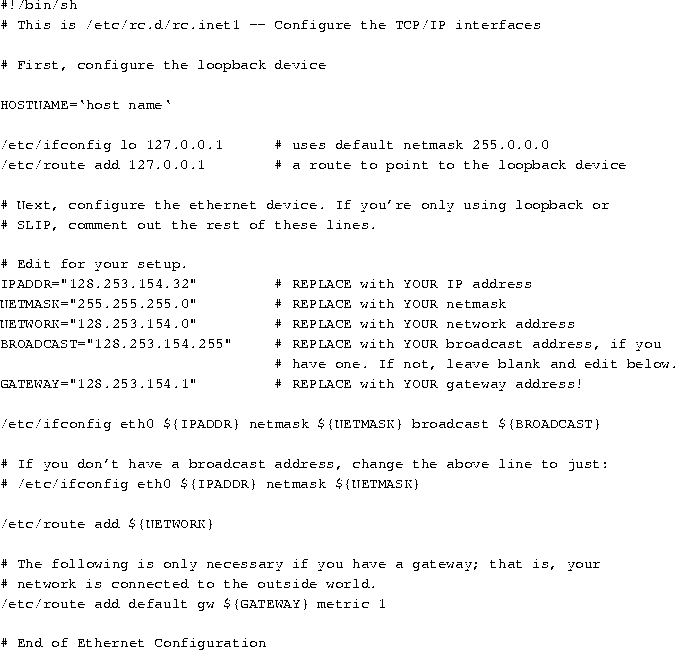
Again, you may have to tweak this file somewhat to get it to work. The above should be sufficient for the majority of simple network configurations, but certainly not all.
rc.inet2 starts up various servers used by the TCP/IP suite. The most important of these is inetd. Inetd sits in the background and listens to various network ports. When a machine tries to make a connection to a certain port (for example, the incoming telnet port), inetd forks off a copy of the appropriate daemon for that port (in the case of the telnet port, inetd starts in.telnetd). This is simpler than running many separate, standalone daemons (e.g., individual copies of telnetd, ftpd, and so forth)--inetd starts up the daemons only when they are needed.
Syslogd is the system logging daemon--it accumulates log messages from various applications and stores them into log files based on the configuration information in /etc/syslogd.conf. routed is a server used to maintain dynamic routing information. When your system attempts to send packets to another network, it may require additional routing table entries in order to do so. routed takes care of manipulating the routing table without the need for user intervention.
Our example rc.inet2, below, only starts up the bare minimum of servers. There are many other servers as well--many of which have to do with NFS configuration. When attempting to setup TCP/IP on your system, it's usually best to start with a minimal configuration and add more complex pieces (such as NFS) when you have things working.
Note that in the below file, we assume that all of the network daemons are held in /etc. As usual, edit this for your own configuration.
Among the various additional servers that you may want to start in rc.inet2 is named. Named is a name server--it is responsible for translating (local) IP addresses to names, and vice versa. If you don't have a name server elsewhere on the network, or want to provide local machine names to other machines in your domain, it may be necessary to run named. (For most configurations it is not necessary, however.) Named configuration is somewhat complex and requires planning; we refer interested readers to a good book on TCP/IP network administration.
/etc/hosts contains a list of IP addresses and the host names that they correspond to. In general, /etc/hosts only contains entries for your local machine, and perhaps other ``important'' machines (such as your name server or gateway). Your local name server will provide address-to-name mappings for other machines on the network, transparently.
For example, if your machine is loomer.vpizza.com with the IP address
128.253.154.32, your /etc/hosts would look like:
If you're only using
loopback, the only line in /etc/hosts should be for 127.0.0.1, with
both localhost and your host name after it.
The /etc/networks file lists the names and addresses of your own, and other, networks. It is used by the route command, and allows you to specify a network by name, should you so desire.
Every network you wish to add a route to using the route command (generally called from rc.inet1--see above) must have an entry in /etc/networks.
As an example,
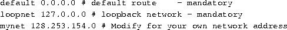
This file is used to specify how your system will resolve host names.
It should contain the two lines:
These lines tell the resolve libraries to first check the
/etc/hosts file for any names to lookup, and then to ask the name server
(if one is present). The multi entry allows you to have multiple
IP addresses for a given machine name in /etc/hosts.
This file configures the name resolver, specifying the address of your name server (if any) and your domain name. Your domain name is your fully-qualified host name (if you're a registered machine on the Internet, for example), with the host name chopped off. That is, if your full host name is loomer.vpizza.com, your domain name is just vpizza.com.
For example, if your machine is goober.norelco.com, and has a
name server at the address 128.253.154.5, your /etc/resolv.conf would
look like:
You can specify more than one name server--each must have a
nameserver line of its own in resolv.conf.
You should set your system host name with the hostname command.
This is usually called from /etc/rc or /etc/rc.local;
simply search your system rc files to determine where it is
invoked. For example, if your (full) host name is loomer.vpizza.com,
edit the appropriate rc file to execute the command:
Note that the hostname executable may not be found in /bin
on your system.
Once you have all of these files set up, you should be able to reboot your new kernel and attempt to use the network. There are many places where things can go wrong, so it's a good idea to test individual aspects of the network configuration (e.g., it's probably not a good idea to test your network configuration by firing up Mosaic over a network-based X connection).
You can use the netstat command to display your routing tables; this is usually the source of the most trouble. The netstat man page describes the exact syntax of this command in detail. In order to test network connectivity, we suggest using a client such as telnet to connect to machines both on your local subnetwork and external networks. This will help to narrow down the source of the problem. (For example, if you're unable to connect to local machines, but can connect to machines on other networks, more than likely there is a problem with your netmask and routing table configuration). You can also invoke the route command directly (as root) to play with the entries in your routing table.
You should also test network connectivity by specifying IP addresses
directly, instead of host names. For example, if you have problems with
the command
the cause may be incorrect name server configuration. Try using
the actual IP address of the machine in question; if that works, then
you know your basic network setup is (more than likely) correct,
and the problem lies in your specification of the name server address.
Debugging network configurations can be a difficult task, and we can't begin to cover it here. If you are unable to get help from a local guru we strongly suggest reading the Linux Network Administrators' Guide from the LDP.
SLIP (Serial Line Internet Protocol) allows you to use TCP/IP over a serial line, be that a phone line, with a dialup modem, or a leased asynchronous line of some sort. Of course, to use SLIP you'll need access to a dial-in SLIP server in your area. Many universities and businesses provide SLIP access for a modest fee.
There are two major SLIP-related programs available--dip and slattach. Both of these programs are used to initiate a SLIP connection over a serial device. It is necessary to use one of these programs in order to enable SLIP--it will not suffice to dial up the SLIP server (with a communications program such as kermit) and issue ifconfig and route commands. This is because dip and slattach issue a special ioctl() system call to seize control of the serial device to be used as a SLIP interface.
dip can be used to dial up a SLIP server, do some handshaking to login to the server (exchanging your username and password, for example) and then initiate the SLIP connection over the open serial line. slattach, on the other hand, does very little other than grab the serial device for use by SLIP. It is useful if you have a permanent line to your SLIP server and no modem dialup or handshaking is necessary to initiate the connection. Most dialup SLIP users should use dip, on the other hand.
dip can also be used to configure your Linux system as a SLIP server, where other machines can dial into your own and connect to the network through a secondary Ethernet connection on your machine. See the documentation and man pages for dip for more information on this procedure.
SLIP is quite unlike Ethernet, in that there are only two machines on the ``network''--the SLIP host (that's you) and the SLIP server. For this reason, SLIP is often referred to as a ``point-to-point'' connection. A generalization of this idea, known as PPP (Point to Point Protocol) has also been implemented for Linux.
When you initiate a connection to a SLIP server, the SLIP server will give you an IP address based on (usually) one of two methods. Some SLIP servers allocate ``static'' IP addresses--in which case your IP address will be the same every time you connect to the server. However, many SLIP servers allocate IP addresses dynamically--in which case you receive a different IP address each time you connect. In general, the SLIP server will print the values of your IP and gateway addresses when you connect. dip is capable of reading these values from the output of the SLIP server login session and using them to configure the SLIP device.
Essentially, configuring a SLIP connection is just like configuring for loopback or ethernet. The main differences are discussed below. Read the previous section on configuring the basic TCP/IP files, and apply the changes described below.
If you are using a static-allocation SLIP server, you may want to include entries for your IP address and host name in /etc/hosts. Also, configure these files listed in the above section: rc.inet2, host.conf, and resolv.conf.
Also, configure rc.inet1, as described above. However, you only want to execute ifconfig and route commands for the loopback device. If you use dip to connect to the SLIP server, it will execute the appropriate ifconfig and route commands for the SLIP device for you. (If you're using slattach, on the other hand, you will need to include ifconfig/route commands in rc.inet1 for the SLIP device--see below.)
dip should configure your routing tables appropriately for the SLIP connection when you connect. In some cases, however, dip's behavior may not be correct for your configuration, and you'll have to run ifconfig or route commands by hand after connecting to the server with dip (this is most easily done from within a shell script that runs dip and immediately executes the appropriate configuration commands). Your gateway is, in most cases, the address of the SLIP server. You may know this address before hand, or the gateway address will be printed by the SLIP server when you connect. Your dip chat script (described below) can obtain this information from the SLIP server.
ifconfig may require use of the pointopoint argument, if
dip doesn't configure the interface correctly. For example,
if your SLIP server address is 128.253.154.2, and your IP address
is 128.253.154.32, you may need to run the command
as root, after connecting with dip. The man pages for
ifconfig will come in handy.
Note that SLIP device names used with the ifconfig and route commands are sl0, sl1 and so on (as opposed to eth0, eth1, etc. for Ethernet devices).
In Section 6.1.2, below, we explain how to configure dip to connect to the SLIP server.
If you have a leased line or cable running directly to your SLIP server, then there is no need to use dip to initiate a connection. slattach can be used to configure the SLIP device instead.
In this case, your /etc/rc.inet1 file should look something like
the following:
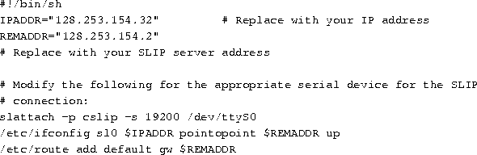
slattach allocates the first unallocated SLIP device (sl0, sl1, etc.) to the serial line specified.
Note that the first parameter to slattach is the SLIP protocol to use. At present the only valid values are slip and cslip. Slip is regular SLIP, as you would expect, and cslip is SLIP with datagram header compression. In most cases you should use cslip; however, if you seem to be having problems with this, try slip.
If you have more than one SLIP interface then you will have routing considerations to make. You will have to decide what routes to add, and those decisions can only be made on the basis of the actual layout of your network connections. A book on TCP/IP network configuration, as well as the man pages to route, will be of use.
If your SLIP server allocates an IP address dynamically, then you certainly don't know your address in advance--therefore, you can't include an entry for it in /etc/hosts. (You should, however, include an entry for your host with the loopback address, 127.0.0.1.)
Many SLIP servers print your IP address (as well as the server's address)
when you connect. For example, one type of SLIP server prints a string
such as,
dip can capture these numbers from the output of the server and use them
to configure the SLIP device.
See page  , above, for information on configuring
your various TCP/IP files for use with SLIP. Below, we explain how to
configure dip to connect to the SLIP server.
, above, for information on configuring
your various TCP/IP files for use with SLIP. Below, we explain how to
configure dip to connect to the SLIP server.
dip can simplify the process of connecting to a SLIP server, logging in, and configuring the SLIP device. Unless you have a leased line running to your SLIP server, dip is the way to go.
To use dip, you'll need to write a ``chat script'' which contains a list of commands used to communicate with the SLIP server at login time. These commands can automatically send your user name/password to the server, as well as get information on your IP address from the server.
Here is an example dip chat script, for use with a dynamic IP address server. For static servers, you will need to set the variables $local and $remote to the values of your local IP address and server IP address, respectively, at the top of the script. See the dip man page for details.
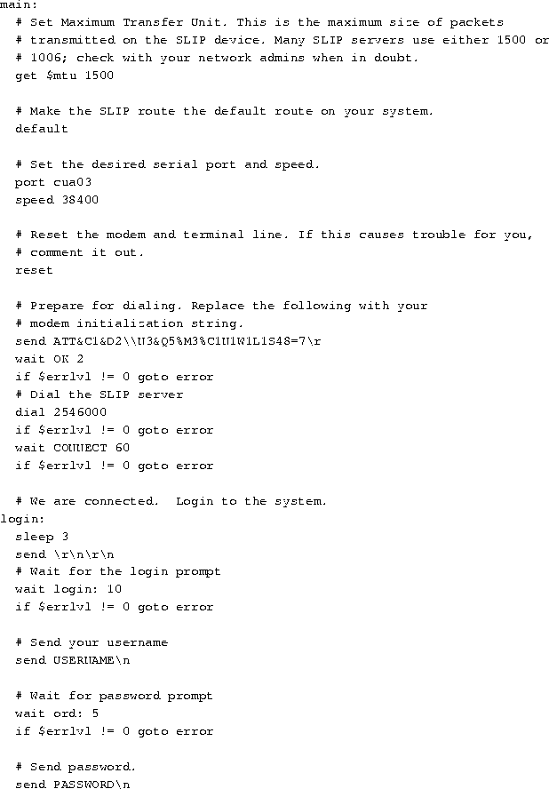
dip automatically executes ifconfig and route commands based on the values of the variables $local and $remote. Here, those variables are assigned using the get...remote command, which obtains text from the SLIP server and assigns it to the named variable.
If the ifconfig and route commands that dip runs for you don't work, you can either run the correct commands in a shell script after executing dip, or modify the source for dip itself. Running dip with the -v option will print debugging information while the connection is being set up, which should help you to determine where things might be going awry.
Now, in order to run dip and open the SLIP connection, you can use
a command such as:
Where the various dip files, and the chat script (mychat.dip),
are stored in /etc/dip.
The above discussion should be enough to get you well on your way to talking to the network, either via Ethernet or SLIP. Again, we strongly suggest looking into a book on TCP/IP network configuration, especially if your network has any special routing considerations, other than those mentioned here.
Linux supports a full implementation of the PPP (Point-to-Point) networking protocols. PPP is a mechanism for creating and running IP (the Internet Protocol) and other network protocols over a serial connection (using a null-modem cable), over a telnet established link or a link made using modems and telephone lines (and of course using digital lines such as ISDN). This section will only cover configuring PPP as a client connecting via an analog modem to a remote machine that provides PPP dialup service.
For complete information on setting up PPP under Linux, we encourage you to read the Linux PPP HOWTO, available via anonymous FTP from sunsite.unc.edu. The PPP HOWTO is a complete guide to configuring PPP, including modem, ISDN and null-modem cables, under Linux. Much of the information in this section was gleaned from this document. The Linux Network Administrator's Guide, from the Linux Documentation Project, is also available. See Appendix A for more information on these documents.
We assume that your kernel has been configured and compiled with TCP/IP support enabled. See Section 4.9 for information on compiling your kernel. To enable networking, you must answer ``yes'' to the appropriate questions during the make config step, and rebuild the kernel. We also assume that ppp has been compiled and installed on your system as well. We assume that you are using a Linux 1.2.x kernel with the PPP 2.1.2 software or Linux 1.3.X/2.0.x and PPP 2.2.0. At the time of writing, the latest official version of PPP available for Linux is ppp-2.2f. Please see the kerneld mini-HOWTO if you plan to use modules to load ppp into your kernel. It is highly recommended that you use a version of the Linux kernel and the appropriate PPP version that are known to be stable together.
You should also read
There are several steps to setting up your system to use PPP. We recommend that you read through all of these steps thoroughly before attempting to actually bring up a PPP connection. Each of these steps will be discussed in detail later.
Linux PPP operations come in two parts: 1) the PPP daemon and kernel support
for PPP. Most distributions seem to provide PPP kernel support in their
default installation kernels, but others do not. You should make sure that
TCP/IP is compiled into your kernel. You can do this by issuing the following
command:
If you get a line similar to
then you have TCP/IP support compiled in. You can also look for the above information on the console while Linux is booting. On many fast machines, this scrolls by too quickly. You can use Shift-PageUp to scroll the screen up and see this.
If at boot your kernel reports messages like
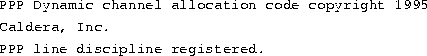
then your kernel has PPP support. You can also issue the command
If you get a line similar to
that means PPP support is present.
You should make sure that your modem is correctly set up and that you know which serial port it is connected to.
Historically, Linux used cuax devices for dial out and ttySx devices for dial in. The kernel code that required this was changed in kernel version 2.0.x and you should now use ttySx for both dial in and dial out. The cuax device names may well disappear in future kernel versions.
If you are using a high speed (external) modem (14,400 Baud or above), your serial port needs to be capable of handling the throughput that such a modem is capable of producing, particularly when the modems are compressing the data.
This requires your serial port to use a modern UART (Universal Asynchronous Receiver Transmitter) such as a 16550A. If you are using an old machine (or old serial card), it is quite possible that your serial port has only an 8250 UART, which will cause you considerable problems when used with a high speed modem.
Use the command
to get Linux to report to you the type of UART you have. If you do not have a 16550A type UART, invest in a new serial card (available for under $50). You will need to configure your modem correctly for PPP--to do this READ YOUR MODEM MANUAL! Most modems come with a factory default setting that selects the options required for PPP. Recommended configuration specifies (in standard Hayes commands):
There is a site offering sample configurations for a growing variety of modem makes and models at Modem setup information (http://www.in.net/info/modems/index.html) which may assist you in this.
Use your communications software (e.g. minicom or seyon) to find out about your modem configuration and set it to what is required for PPP. Many modems report their current settings in response to AT&V, but you should consult your modem manual.
If you completely mess up the settings, you can return to sanity (usually) by issuing an AT&F--return to factory settings. (For most modem modems I have encountered, the factory settings include all you need for PPP--but you should check).
Once you have worked out the modem setup string required write it down. You now have a decision: you can store these settings in your modem non-volatile memory so they can be recalled by issuing the appropriate AT command. Alternatively you can pass the correct settings to your modem as part of the PPP dialing process.
If you only use your modem from Linux to call into your ISP or corporate server, the simplest set up will have you save your modem configuration in non-volatile RAM.
If on the other hand, your modem is used by other applications and operating systems, it is safest to pass this information to the modem as each call is made so that the modem is guaranteed to be in the correct state for the call. (This has the added advantage also of recording the modem setup string in case the modem looses the contents of its NV-RAM, which can indeed happen).
Before you can establish your PPP connection with a remote server, you need to obtain the following information from the system administrator or technical support people of the ISP.
Most Internet Service Providers use DYNAMIC IP numbers. As mentioned above, this has some implications in terms of the services you can use.
However, even if you are using STATIC IP numbers, most PPP servers will never (for security reasons) allow the client to specify an IP number as this is a security risk. You do still need to know this information!
There could be a problem here. The MS Windows 95 PPP setup allows the DNS address to be passed to the client as part of its connection process. So your ISP (or corporate help desk) may well tell you you don't need the IP address of the DNS server(s).
For Linux, you DO need the address of at least one DNS. The linux implementation of PPP does not allow the setting of the DNS IP number dynamically at connection time--and quite possibly will never do so.
Every device that connects to the Internet must have its own, unique IP number. These are assigned centrally by a designated authority for each country. Therefore to use a PPP connection must have an IP assigned to you. Due to the increased number of machines on the Internet (partly do the large number of PPP users), a dynamic scheme has been developed for PPP that provides an IP on the fly to your machine when it first establishes the PPP connection. This means that you will have a different IP address every time you connect to the remote PPP dialup service. This is the most common method for most ISPs. The other method is to use a static IP. You cannot just choose an IP to us. It must be assigned by the centralized agency in charge of issuing IP numbers. This prevents two computers from having the same IP address and causing problems on the Internet. The remote PPP dialup service provider will be able to tell you if you are using a static or dynamic IP and also provide you with the actual IP number if you are using the static method.
It is important to note that if you are using dynamic IP assignment, it will be very very difficult to provide any permanent Internet services such as World Wide Web servers, gopher services, or Internet Relay Chat servers. You can still use such services that are on other machines but cannot offer such services on your machine without going through an extreme amount of effort. Doing this beyond the scope of this document.
PAP and CHAP are different commonly-used authentication methods. Linux supports both of them.
Now that you have sorted out the serial port and modem settings it is a good idea to make sure that these setting do indeed work by dialing you ISP and seeing if you can connect.
Using you terminal communications package (such as minicom or seyon), set up the modem initialization required for PPP and dial into the PPP server you want to connect to with a PPP session.
(Note: at this stage we are NOT trying to make a PPP connection--just establishing that we have the right phone number and also to find out exactly what the server sends to us in order to get logged in and start PPP).
During this process, either capture (log to a file) the entire login process or carefully (very carefully) write down exactly what prompts the server gives to let you know it is time to enter your user name and password (and any other commands needed to establish the PPP connection).
If your server uses PAP, you should not see a login prompt, but should instead see the (text representation) of the link control protocol (which looks like garbage) starting on your screen.
A few words of warning:
It is worth dialing in at least twice--some servers change their prompts (e.g. with the time!) every time you log in. The two critical prompts your Linux box needs to be able to identify every time you dial in are:
If you have to issue a command to start PPP on the server, you will also need to find out the prompt the server gives you once you are logged in to tell you that you can now enter the command to start PPP.
If your server automatically starts PPP, once you have logged in, you will start to see garbage on your screen--this is the PPP server sending your machine information to start up and configure the PPP connection.
This should look something like this :
y}#.!}!}!} }8}!}}U}"}\&} } } } }}\& ...}'}"}(}"} .~~y}
On some systems PPP must be explicitly started on the server. This is usually because the server has been set up to allow PPP logins and shell logins using the same user name/password pair. If this is the case, issue this command once you have logged in. Again, you will see the garbage as the server end of the PPP connection starts up.
If you do not see this immediately after connecting (and logging in and starting the PPP server if required), press Enter to see if this starts the PPP server.
At this point, you can hang up your modem (usually, type +++ quickly and then issue the ATH0 command once your modem responds with OK).
If you can't get your modem to work, read your modem manual, the man pages for your communications software and the Serial HOWTO. Once you have this sorted out, carry on as above.
If you are using dynamic IP numbers (and many service providers will only give you a dynamic IP number unless you pay significantly more for your connection), then you have to recognise the limitations this imposes.
First of all, outbound service requests will work just fine. That is, you can send email using sendmail (provided you have correctly set up sendmail), ftp files from remote sites, finger users on other machines, browse the web etc.
In particular, you can answer email that you have brought down to your machine whilst you are off line. Mail will simply sit in your mail queue until you dial back into your ISP.
However, your machine is not connected to the Internet 24 hours a day, nor does it have the same IP number every time it is connected. So it is impossible for you to receive email directed to your machine, and very difficult to set up a web or ftp server that your friends can access! As far as the Internet is concerned your machine does not exist as a unique, permanently contactable machine as it does not have a unique IP number (remember--other machines will be using the IP number when they are allocated it on dial in).
If you set up a WWW (or any other server), it is totally unknown by any user on the Internet UNLESS they know that your machine is connected AND its actual (current) IP number. There are a number of ways they can get this info, ranging from you ringing them, sending them email to tell them or cunning use of ".plan" files on a shell account at your service provider (assuming that your provider allows shell and finger access).
For most users, this is not a problem--all that most people want is to send and receive email (using your account on your service provider) and make outbound connections to WWW, ftp and other servers on the Internet. If you must have inbound connections to your server, you should really get a static IP number.
You now need to be logged in as root to create the directories and edit the files needed to set up PPP. PPP uses a number of files to connect and set up a PPP connection. These differ in name and location between PPP 2.1.2 and 2.2.
For PPP 2.1.2 the files are:
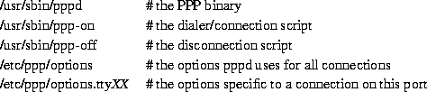
For PPP 2.2 the files are:
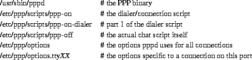
Red Hat Linux users should note that the standard Red Hat 4.X installation places these scripts in /usr/doc/ppp-2.2.0f-2/scripts.
In your /etc directory there should be a ppp directory:
drwxrwxr-x 2 root root 1024 Oct 9 11:01 ppp
If it does not exist--create it with these ownerships and permissions.
If the directory already existed, it should contain a template options file called options.tpl. This file is included below in case it does not.
Print it out as it contains an explanation of nearly all the PPP options (these are useful to read in conjunction with the pppd man pages). Whilst you can use this file as the basis of your /etc/ppp/options file, it is probably better to create your own options file that does not include all the comments in the template - it will be much shorter and easier to read/maintain.
Some distributions of PPP seem to have lost the options.tpl file. You should examine the PPP-HOWTO document for the complete version.
Well, as in all things that depends (sigh). The options specified here should work with most servers.
However, if it does NOT work, READ THE TEMPLATE FILE (/etc/ppp/options.tpl) and the pppd man pages and speak to the sysadmin/user support people who run the server to which you are connecting.
You should also note that the connect scripts presented here also use some command line options to pppd to make things a bit easier to change.
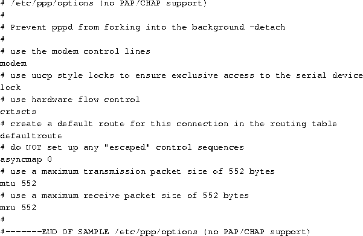
Now that you have created your /etc/ppp/options and /etc/resolv.conf files (and, if necessary, the /etc/ppp/pap|chap-secrets file), you can test the settings by manually establishing a PPP connection. (Once we have the manual connection working, we will automate the process).
To do this, your communications software must be capable of quitting WITHOUT resetting the modem. Minicom can do this with the sequence Control-A Q
Substituting the name of the device your modem is connected to, of course.
The -d option enables debugging--the PPP connection start-up conversation will be logged to your system log--which is useful for tracing problems later.
At this point you can look at the PPP interface, by issuing the command
In addition to any Ethernet and loop back devices you have, you should see something like :
ppp0 Link encap:Point-Point Protocol
inet addr:10.144.153.104 P-t-P:10.144.153.51 Mask:255.255.255.0
UP POINTOPOINT RUNNING MTU:552 Metric:1
RX packets:0 errors:0 dropped:0 overruns:0
TX packets:0 errors:0 dropped:0 overruns:0
Where
(Ifconfig will not report these IP numbers, but the ones used by your PPP server.) Note: ifconfig also tells you that the link is UP and RUNNING!
You should also be able to see a route to the the remote host (and beyond). To do this, issue the command
You should see something like:
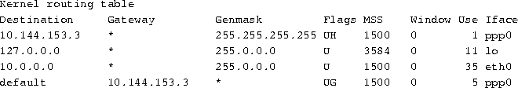
Of particular importance here, notice we have TWO entries pointing to our PPP interface.
The first is a HOST route (indicated by the H flag) and that allows us to see the host to which we are connected to--but no further.
The second is the default route (established by giving pppd the option defaultroute. This is the route that tells our Linux PC to send any packets NOT destined for the local Ethernet(s)--to which we have specific network routes--to the PPP server itself. The PPP server then is responsible for routing our packets out onto the Internet and routing the return packets back to us.
If you do not see a routing table with two entries, something is wrong. In particular if your syslog shows a message telling you pppd is not replacing an existing default route, then you have a default route pointing at your Ethernet interface--which MUST be replaced by a specific network route: YOU CAN ONLY HAVE ONE DEFAULT ROUTE!!!
You will need to explore your system initialization files to find out where this default route is being set up (it will use a route add default... command). Change this command to something like route add net....
Now test the link by 'pinging' the server at its IP number as reported by the ifconfig output, i.e.
You should receive output like
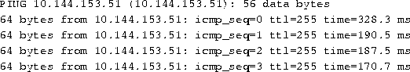
This listing will go on for ever--to stop it press Control-C, at which point you will receive some more information:
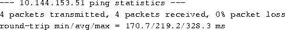
Now try pinging a host by name (not the name of the PPP server itself) but a host at another site that you KNOW is probably going to be up and running. For example
This time there will be a bit of a pause as Linux obtains the IP number for the fully qualified host name you have 'ping'ed from the DNS you specified in /etc/resolv.conf--so don't worry (but you will see your modem lights flash). Shortly you will receive output like
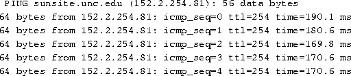
Again, stop the output by pressing Control-C and get the statistics...
If you don't get any response, try pinging the IP address of the DNS server at your ISP's site. If you get a result from this, then it looks like you have a problem with /etc/resolv.conf.
If this doesn't work, you have a routing problem, or your ISP has a problem routing packets back to you. Check your routing table as shown above and if that is OK, contact your ISP. A good test of the ISP is to use another operating system to connect. If you can get beyond your ISP with that, then the problem is at your end.
If everything works, shut down the connection by typing
After a short pause, the modem should hang itself up.
If that does not work, either turn off your modem or fire up your communications software and interrupt the modem with +++ and then hang up with ATH0 when you receive the modem's OK prompt.
You may also need to clean up the lock file created by pppd by typing
You can continue to log in by hand as shown above, it is much neater to set up some scripts to do this automatically for you.
A set of scripts automates the log in and PPP start up so all you have to do (as root or as a member of the PPP group) is issue a single command to fire up your connection.
If your ISP does NOT require the use of PAP/CHAP, these are the scripts for you.
If the PPP package installed correctly, you should have two example files. For PPP 2.1.2 they are in /usr/sbin and for PPP 2.2 they are in /etc/ppp/scripts. They are called
for PPP-2.1.2
ppp-on
ppp-off
and for PPP-2.2
ppp-off
ppp-on
ppp-on-dialer
Now, if you are using PPP 2.1.2, I strongly urge you to delete the sample files. There are potential problems with these--and don't tell me they work fine--I used them for ages too (and recommended them in the first version of this HOWTO)!
For the benefit of PPP 2.1.2 users, here are BETTER template versions, taken from the PPP 2.2 distribution. I suggest you copy and use these scripts instead of the old PPP-2.1.2 scripts.
15.2. The ppp-on script
This is the first of a PAIR of scripts that actually fire up the connection.
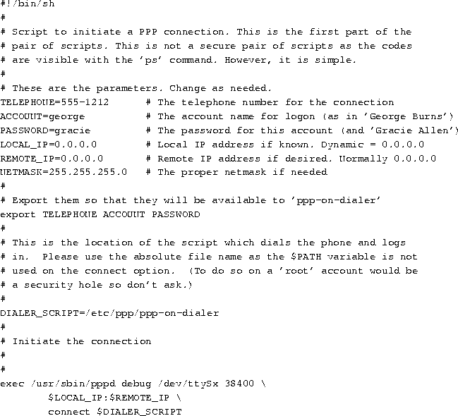
Here is the ppp-on-dialer script:
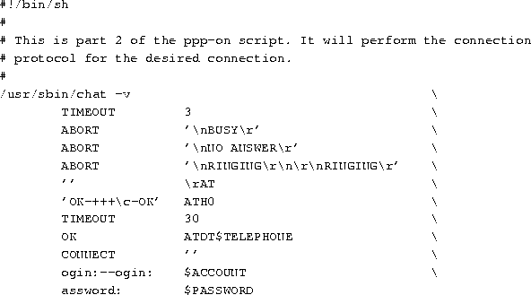
For PPP-2.2, the ppp-off script looks like:
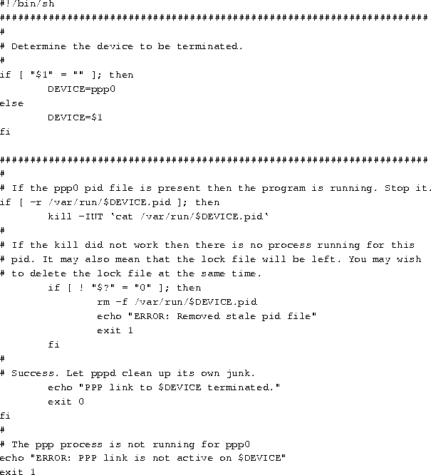
As the new scripts come in two parts, and we will edit them in turn.
You will need to edit the ppp-on script to reflect YOUR user name at your ISP, YOUR password at your ISP, the telephone number of your ISP.
Each of the lines like TELEPHONE= actually set up shell variables that contain the information to the right of the '=' (excluding the comments of course). So edit each of these lines so it is correct for your ISP and connection.
Also, as you are setting the IP number (if you need to) in the /etc/ppp/options file, DELETE the line that says:
$LOCAL_IP:$REMOTE_IP \
Also, make sure that the shell variable DIALER_SCRIPT points at the full path and name of the dialer script that you are actually going to use. So, if you have moved this or renamed the script, make sure you edit this line correctly in the ppp-on script!
This is the second of the scripts that actually brings up our ppp link.
Note: a chat script is normally all on one line. the backslashes are used to allow line continuations across several physical lines (for human readability) and do not form part of the script itself.
However, it is very useful to look at it in detail so that we understand what it is actually (supposed) to be doing!
A chat script is a sequence of "expect string" "send string" pairs. In particular, note that we ALWAYS expect something before we send something.
If we are to send something WITHOUT receiving anything first, we must use an empty expect string (indicated by "") and similarly for expecting something without sending anything! Also, if a string consists of several words, (e.g. NO CARRIER), you must quote the string so that it is seen as a single entity by chat.
The chat line in our template is:
Invoke chat, the -v tells chat to copy ALL its I/O into the system log (usually /var/log/messages). Once you are happy that the chat script is working reliably, edit this line to remove the -v to save unnecessary clutter in your syslog.
This sets the timeout for the receipt of expected input to three seconds. You may need to increase this to say 5 or 10 seconds if you are using a really slow modem!
If the string BUSY is received, abort the operation.
If the string NO ANSWER is received, abort the operation
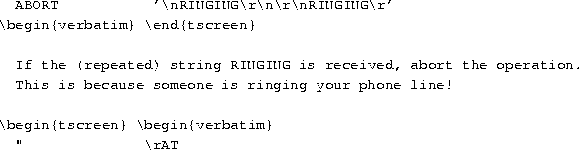
Expect nothing from the modem and send the string AT.
This one is a bit more complicated as it uses some of chat's error recovery capabilities.
What is says is...Expect OK, if it is NOT received (because the modem is not in command mode) then send +++ (the standard Hayes-compatible modem string that returns the modem to command mode) and expect OK. Then send ATH0 (the modem hang up string). This allows your script to cope with the situation of your modem being stuck on-line!
Set the timeout to 30 seconds for the remainder of the script. If you experience trouble with the chat script aborting due to timeouts, increase this to 45 seconds or more.
Expect OK (the modem's response to the ATH0 command) and dial the number we want to call.
Expect CONNECT (which our modem sends when the remote modem answers) and send nothing in reply.
Again, we have some error recovery built in here. Expect the login prompt (...ogin:) but if we don't receive it by the timeout, send a return and then look for the login prompt again. When the prompt is received, send the username (stored in the shell variable $ACCOUNT).
Expect the password prompt and send our password (again, stored in a shell variable).
This chat script has reasonable error recovery capability. Chat has considerably more features than demonstrated here. For more information consult the chat manual page (man 8 chat).
While the ppp-on-dialer script is fine for servers that automatically start pppd at the server end once you have logged in, some servers require that you explicitly start PPP on the server.
If you need to issue a command to start up PPP on the server, you DO need to edit the ppp-on-dialer script.
At the END of the script (after the password line) add an additional
expect send pair--this one would look for your login prompt (beware
of characters that have a special meaning in the Bourne shell, like
Once chat has found the shell prompt, chat must issue the ppp start up command required for your ISPs PPP server.
In one author's case, the PPP server uses the standard Linux Bash prompt
which requires the response

to start up PPP on the server.
It is a good idea to allow for a bit of error recovery here, so use
This says, if we don't receive the prompt within the timeout, send a
carriage return and looks for the prompt again.
Once the prompt is received, then send the string ppp.
Note: don't forget to add a to the end of the previous line so chat still thinks the entire chat script is on one line!
Unfortunately, some servers produce a very variable set of prompts! You may need to log in several times using minicom to understand what is going on and pick the stable "expect" strings.
If the server to which you are connecting requires PAP or CHAP authentication, you have a little bit more work.
To the above options file, add the following lines
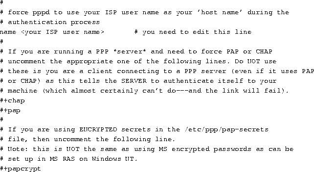
Microsoft Windows NT RAS can be set up to use a variation on CHAP (Challenge/Handshake Authentication Protocol). In your PPP sources you will find a file called README.MSCHAP80 that discusses this. You can determine if the server is requesting authentication using this protocol by enabling debugging for pppd. If the server is requesting MS CHAP authentication, you will see lines like
The critical information here is auth chap 80.
In order to use MS CHAP, you will need to recompile pppd to support this. Please see the instructions in the README.MSCHAP80 file in the PPP source file for instructions on how to compile and use this variation.
If you are using pap or chap authentication, then you also need to create the secrets file. These are 1)/etc/ppp/pap-secrets and 2)/etc/ppp/chap-secrets.
They must be owned by user root, group root and have file permissions 740 for security. The first point to note about PAP and CHAP is that they are designed to authenticate computer systems not users. In other words, once your computer has made its PPP connection to the server, ANY user on your system can use that connection--not just you.
PAP can (and for CHAP DOES) require bidirectional authentication--that is a valid name and secret is required on each computer for the other computer involved. However, this is NOT the way most PPP servers offering dial up PPP PAP-authenticated connections operate.
That being said, your ISP will probably have given you a user name and password to allow you to connect to their system and thence the Internet. Your ISP is not interested in your computer's name at all, so you will probably need to use the user name at your ISP as the name for your computer. This is done using the name user name option to pppd. So, if you are to use the user name given you by your ISP, add the line
name your_user name_at_your_ISP
to your /etc/ppp/options file.
Technically, you should really use user our_user name_at_your_ISP for PAP, but pppd is sufficiently intelligent to interpret name as user if it is required to use PAP. The advantage of using the name option is that this is also valid for CHAP.
As PAP is for authenticating computers, technically you need also to specify a remote computer name. However, as most people only have one ISP, you can use a wild card (*) for the remote host name in the secrets file.
The /etc/ppp/pap-secrets file looks like
# Secrets for authentication using PAP # client server secret acceptable_local_IP_addresses
The four fields are white space delimited and the last one can be blank (which is what you want for a dynamic and probably static IP allocation from your ISP).
Suppose your ISP gave you a user name of fred and a password of flintstone you would set the name fred option in /etc/ppp/options and set up your /etc/ppp/pap-secrets file as follows
# Secrets for authentication using PAP # client server secret acceptable local IP addresses fred * flintstone
This says for the local machine name fred (which we have told pppd to use even though it is not our local machine name) and for ANY server, use the password (secret) of flintstone.
Note that we do not need to specify a local IP address, unless we are required to FORCE a particular local, static IP address. Even if you try this, it is unlikely to work as most PPP servers (for security reasons) do not allow the remote system to set the IP number they are to be given.
This requires that you have mutual authentication methods--that is you must allow for both your machine to authenticate the remote server AND the remote server to authenticate your machine.
So, if your machine is fred and the remote is barney, your machine would set name fred remotename barney and the remote machine would set name barney remotename fred in their respective /etc/ppp/options.ttySx files.
The /etc/chap-secrets file for fred would look like
# Secrets for authentication using CHAP # client server secret acceptable local IP addresses fred barney flintstone barney fred wilmaand for barney
# Secrets for authentication using CHAP # client server secret acceptable local IP addresses barney fred flintstone fred barney wilma
Note in particular that both machines must have entries for bidirectional authentication. This allows the local machine to authenticate itself to the remote AND the remote machine to authenticate itself to the local machine.
If your ISP is using PAP/CHAP, then your chat script is much simpler. All your chat script needs to do is dial the telephone, wait for a connect and then let pppd handle the logging in!
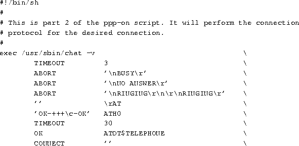
As we have already seen, you can turn on debug information logging with the -d option to pppd. The 'debug' option is equivalent to this.
As we are establishing a new connection with a new script, leave in the debug option for now. (Warning: if your disk space is tight, logging pppd exchanges can rapidly extend your syslog file and run you into trouble--but to do this you must fail to connect and keep on trying for quite a few minutes).
Once you are happy that all is working properly, then you can remove this option.
Open a new root Xterm (if you are in X) or open a new virtual console and log in as root.
In this new session, issue the command
Many systems log output to /var/log/messages. If it has a
different name on your system, substitute the name of your system log
file in the command above.
In the first window (or virtual console) issue the command
(or whatever name you have called your edited version of /usr/sbin/ppp-on). If you do not put the script into the background by specifying & at the end of the command, you will not get your terminal prompt back until ppp exits (when the link terminates).
Now switch back to the window that is tracking your system log.
When you have finished with the PPP link, use the standard ppp-off command to shut it down (remember that you must be root or a member of the ppp group!).
One problem you will find is that many service providers will only support the connection software package that they distribute to new accounts. This is (typically) for Microsoft Windows (--and many service provider help desks seem to know nothing about Unix (or Linux). So, be prepared for limited assistance from them!
You could of course do the individual a favour and educate then about Linux (any ISP help desk person should be reasonably 'with it' in Internet terms and that means they should have a home Linux box--of course it does)!
OK--your PPP connection is up and running and you can ping the PPP server by IP number (the second or "remote" IP number shown by ifconfig ppp0), but you can't reach anything beyond this.
First of all, try pinging the IP numbers you have specified in
/etc/resolv.conf as name servers. If this works, you can see beyond
your PPP server (unless this has the same IP number as the "remote" IP
number of your connection). So now try pinging the full Internet name
of your service provider
Substituting, of course, the name of your actual ISP. If this does not
work, you have a problem with name resolution. This is probably
because of a typo in your /etc/resolv.conf file. Check this
file carefully against the information in the sample
/etc/resolve.conf file in section 6.1.1.
If it still doesn't work (and your service provider confirms that his name servers are up and running), you have a problem somewhere else--and check carefully through your Linux installation (looking particularly at file permissions).
If you still can't ping your service provider's IP name servers by IP number, either they are down (give them a voice call and check) or there is a routing problem at your service provider's end.
One possibility is that the ``remote end'' is a Linux PPP server where the IP forwarding option has not been specified in the kernel!
There are any number of reasons that your connection does not work-- chat has failed to complete correctly, you have a dirty line, etc. So check your syslog for indications.
A very common problem is that people compile PPP support into the kernel and yet when they try to run pppd, the kernel complains that it does not support ppp! There are a variety of reasons this can occur.
And a host of others. Look in the PPP FAQ (which is really a series of questions and answers). This is a very comprehensive document and the answers are there! If the answer to your problems is not there, the problem is not ppp's fault!
If you can't get your PPP link to work, go back through this document and check everything--in conjunction with the output created by "chat-v..." and "pppd -d" in you system log.
Also consult the PPP documentation and FAQ plus the other documents mention herein!
If you are still stuck, try the comp.os.linux.misc and comp.os.linux.networking newsgroups are reasonably regularly scanned by people that can help you with PPP as is comp.protocols.ppp
If you do choose to seek help in the USENET newsgroups, please don't post a very long message consisting of debugging output. This wastes huge amounts of network bandwidth. It is much better to describe the problem and perhaps include a few lines of debugging output (definitely no more than one screenful).